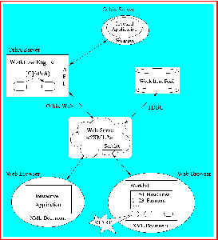
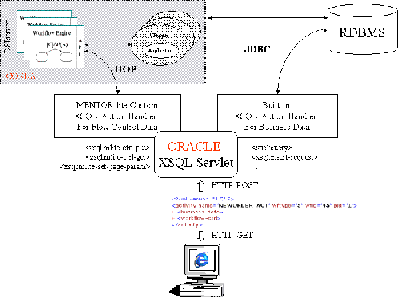

The Mentor-lite Prototype
1 System Overview
The Mentor-lite prototype [1] has been developed within the research project "Architecture, Configuration, and Administration of Large Workflow Management Systems" funded by the German Science Foundation (DFG). It has evolved from its predecessor Mentor [2], but aims at a simpler architecture. The main goal of Mentor-lite has been to build a light-weight, extensible, and tailorable workflow management system (WFMS) with small footprint and easy-to-use administration capabilities. Our approach is to provide only kernel functionality inside the workflow engine, and consider system components like history management and worklist management as extensions on top of the kernel. The key point to retain the light-weight nature is that these extensions are implemented as workflows themselves.
The workflow specifications are interpreted at runtime, which is a crucial prerequisite for flexible exception handling and dynamic modifications during runtime. The interpreter performs a stepwise execution of the workflow specification according to its formal semantics. For each step, the activities to be performed by the step are determined and started.
Mentor-lite supports a protocol for distributed execution of workflows spread across multiple workflow engines. This support is crucial for workflows that span large, decentralized enterprises with largely autonomous organizational units or even cross multiple enterprises to form so-called "virtual enterprises". A communication manager is responsible for sending and receiving synchronization messages between the engines. In order to guarantee a consistent global state even in the presence of site or network failures, we have built reliable message queues using the CORBA Object Transaction Services.
For administration, Mentor-lite provides a Java-based workbench for workflow design, workflow partitioning across multiple workflow servers, and a Java-based runtime monitoring tool.
2 XML-based Interoperability
The latest version of our Mentor-lite prototype system implements an XML-enabled architecture for distributed workflow management [3]. The key asset of this architecture is an XML mediator that handles the exchange of business and flow control data between workflow and business-object servers on one side and client activities on the other side via XML messages over http. Our implementation of the mediator has made use of Oracle's XSQL servlet. The major benefit of the advocated architecture is that it provides seamless integration of client applications into e-service workflows with scalable efficiency and very little explicit coding, in contrast to the earlier, Java-based, version of our Mentor-lite prototype that required much more code and exhibited potential performance problems.
The figures below illustrate this XML-based architecture approach.
 |
 |
| (click | on figure to enlarge) |


3 Auto-Configuration Tool
A distributed configuration of Mentor-lite consists of different workflow servers (i.e., instances of the workflow engine), application servers, and one communication server (i.e., ORB). Each server of the first two categories can be dedicated to a specified set of workflow activities and invoked applications, respectively, on a per type basis. Each of these dedicated servers and also the communication server can be replicated across multiple computers for enhanced performance and availability. Given this flexibility, it is a difficult problem to choose an appropriate configuration for the entire WFMS that meets all requirements with regard to throughput, interaction response time, and availability.
To this end, we have developed an auto-configuration tool that is driven by statistics on the workload from the monitoring tool of Mentor-lite. It can feed this information into its underlying analytic models [4] to assess a hypothetical configuration in a what-if analysis. By systematic variation of the parameters for such hypothetical configurations the tool is also able to derive the (analytically) best configuration, i.e., the minimum degree of replication of each of the involved server types to meet given availability and performance or performability goals, and recommend appropriate reconfigurations. The tool is largely independent of a specific WFMS, using product-specific stubs for its various components that need to interact with the WFMS. The components of the configuration tool and its embedding into the overall system environment are illustrated in the following figure.
 |
| (click on figure to enlarge) |
References
[1] P. Muth, J. Weissenfels, M. Gillmann, G. Weikum: Integrating Light-Weight Workflow Management Systems within Existing Business Environments, in Proceedings of International Conference on Data Engineering (ICDE), Sydney, Australia, 1999.
[2] P. Muth, D. Wodtke, J. Weissenfels, G. Weikum, A. Kotz Dittrich: Enterprise-wide Workflow Management based on State and Activity Charts, in: A. Dogac, L. Kalinichenko, M.T. Ozsu, A. Sheth (Eds.): Workflow Management Systems and Interoperability, NATO Advanced Study Institute, Springer, 1998.
[3] G. Shegalov, M. Gillmann, G. Weikum: XML-enabled Workflow Management for E-Services across Heterogeneous Platforms, to appear in VLDB Journal Special Issue on E-Services, Springer, 2001.
[4] M. Gillmann, J. Weissenfels, G. Weikum, A. Kraiss: Performance and Availability Assessment for the Configuration of Distributed Workflow Management Systems, in Proceedings of International Conference on Extending Database Technology (EDBT), Constance, Germany, 2000.